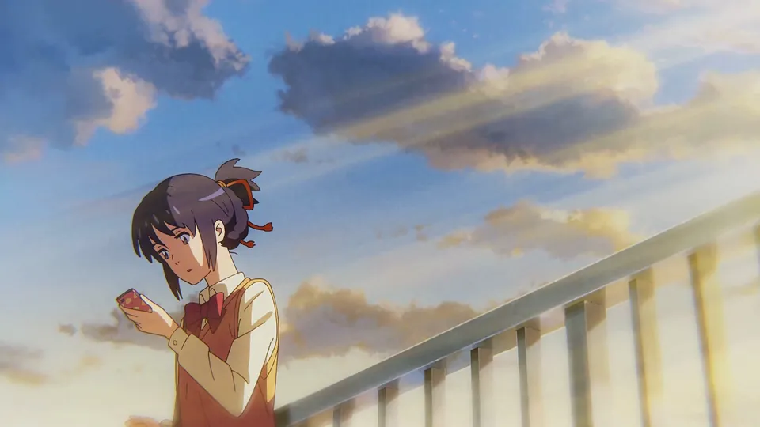
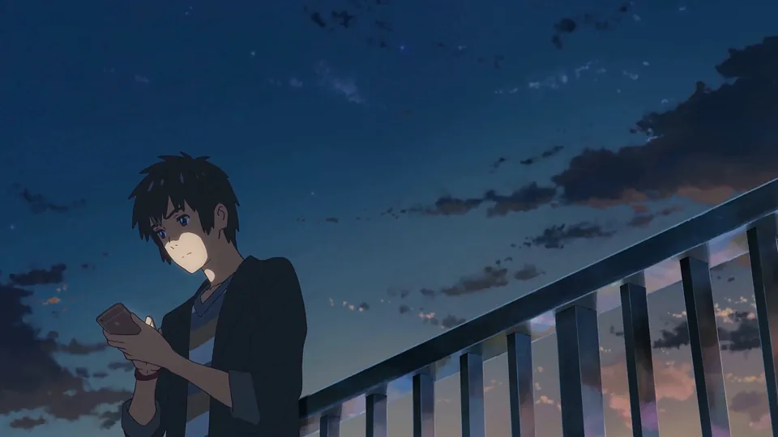
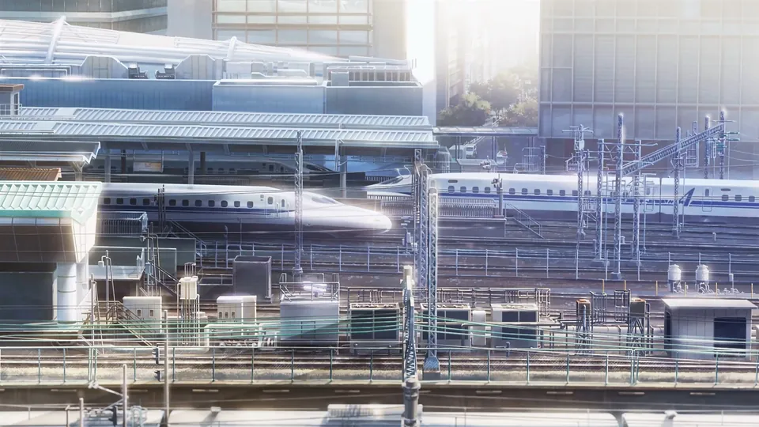
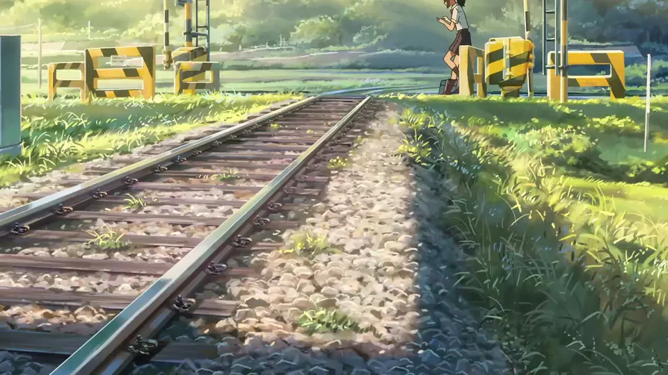

剪辑这部电影的人一定很喜欢“对照”。泷醒来，三叶醒来；泷在天桥上，三叶在天台上；泷在电车里回头，三叶在另一列电车里回头。两个人的镜头常常以几乎相同的构图成对出现，像是同一句话的两种语言。
这篇笔记想做一件很朴素的事：把这些成对的画面并排放在一起，看看它们在颜色上有什么不同。我从电影里挑了二十多张发生在东京与糸守的画面，降采样后转到 CIE Lab 色彩空间里，计算平均的明度、冷暖与饱和度11Lab 空间中，L* 表示明度（0 黑 – 100 白），b* 为负偏蓝、为正偏黄，彩度为 a* 与 b* 的模长。样本各约十二帧，统计结果只是一种“读法”，并非严谨的测量。。结果比我预想的更有意思。
東京
- 明度 L*
- 48.5
- 冷暖 b*
- −7.1
- 彩度
- 15.9
糸守
- 明度 L*
- 47.4
- 冷暖 b*
- +2.7
- 彩度
- 19.0
fig. 01两座城几乎一样亮；但东京明显偏冷，糸守偏暖，且颜色更“浓”。条带的位置表示冷暖：左冷右暖。
两座城的明度几乎相同——新海诚并没有用“明亮的乡下、阴暗的都市”这种廉价的手法。差别在冷暖与浓淡：东京的平均色偏向蓝灰，那是玻璃、混凝土与天空反射的颜色；糸守则偏向黄绿，杉林、木屋与湖岸草地把整个画面染得更暖，也更饱和。
换句话说，东京是清冷而透明的，糸守是温润而厚重的。下面几组对照，可以更直观地看到这一点。
窗windows
先看两个人成年后的卧室。三叶的房间朝着阳台，早晨的光从左边涌进来，地板被照成蜂蜜色；泷的房间同样有一扇大窗，可光是从背后来的，屋里的一切——椅子、床、堆着的书——都沉在一层淡淡的蓝灰里。
这组画面出现在电影的尾声，两人都已经搬到了东京。有趣的是，即使三叶已经离开了糸守，她房间里的光仍然是“糸守的颜色”。颜色在这里成了一种身份：人可以搬家，光却跟着人走。
天台与天桥high places
两个人都喜欢站在高处。三叶在学校的天台上吃便当、发呆；泷在东京的天桥和公寓楼顶上看天。这些画面的构图几乎都一样：人物很小，靠着一侧的栏杆，大半个画面留给天空。

糸守 · 天台

東京 · 天桥
fig. 03相同的“人 + 栏杆 + 大片天空”，一个在正午，一个在入夜。
值得注意的是时间。糸守的高处几乎总是白天，云是堆积的夏云，饱满而明亮；东京的高处则多在傍晚或夜里，天空呈现出一种被城市灯光微微染亮的靛蓝。这种安排把两座城与两种时段绑定在了一起：糸守属于白昼，东京属于黄昏与夜。
它也悄悄地预告了后面的情节——那个只在黄昏发生的相遇，那个只在夜里揭晓的真相，都更靠近“东京的颜色”。
如果要为糸守选一个代表性的形状，那就是圆。湖是圆的，火山口是圆的，后来彗星砸出的新湖也是圆的。东京的代表性形状则是直线：高楼的垂直线，铁轨与高架的水平线，斑马线的平行线。
fig. 04湖岸。电线杆沿着曲线排开，是糸守少有的“直线”。
圆与直线，这大概是两座城在“形状”上的对照。圆是封闭的、循环的、回到原点的——这正好对应糸守那种代代相传的生活：编组纽，跳巫女舞，酿口嚼酒，每年同一个秋祭。直线则是延伸的、通往别处的，就像东京永远在去往某个地方的电车。
而整部电影，恰恰是一个关于“圆”与“线”的故事：一根直线一样的彗星轨迹，落进了一个圆形的湖里；一根组纽被编成环，戴在手腕上，又解开，系回头发上。
铁轨rails
两座城之间唯一的“物理连接”，是铁路。从东京坐新干线，再转地方线，最后是一条在草丛中延伸的单线铁轨。

東京 · 新干线

糸守 · 单线
fig. 05同一条路的两端：几十条平行轨道，和一条被草掩着的铁轨。
东京站的轨道是密集的、平行的、被精确规划过的，颜色是钢铁与混凝土的冷灰；糸守的铁轨则只有一条，被野草和阳光包围，铁轨本身也被晒成了暖褐色。这两张图几乎可以作为两座城色彩统计的“标本”：左边的平均色偏蓝，右边的偏黄。
但它们是同一条路。三叶从糸守去东京，泷从东京去糸守，走的都是这一条。
瀧和朋友
三叶和朋友
fig. 06三个人一组的朋友。连人数都是对照的。
在黄昏里合流convergence
前面所有的统计都有一个例外：黄昏。
当我把东京与糸守各自的黄昏画面单独拿出来计算时，两座城的冷暖差几乎消失了——b* 分别是 −3.8 与 −3.722东京取天桥、高架与街口的四帧黄昏，糸守取神社与山顶的五帧。两者在红绿轴（a*）上仍有差异：山顶的黄昏更偏玫瑰色。。东京的天桥、糸守的神社，在日落时分都被染成了同一种桃色与藤色的混合。这也许是新海诚在色彩上埋下的最温柔的伏笔：只有在黄昏，两座城才真正拥有同一片天空。
fig. 07傍晚的宫水神社。这一刻，糸守的颜色和东京的颜色没有区别。
所以，与其说《你的名字。》是一个“城市男孩遇到乡村女孩”的故事，不如说它是一个关于两种色温如何找到交点的故事。交点不在东京，也不在糸守，而在一天之中的某个时刻。
关于那个时刻，我写了一篇更长的文章。